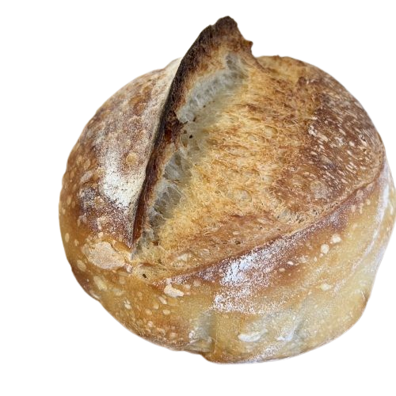

CHOOSE & ENJOY

PAN FRANCES
Pan tradicional de textura ligera y corteza crujiente, elaborado con harina de trigo y consumido diariamente en muchas regiones.
AÑDIR AL CARRITO
PAN DE MODE
Pan suave y esponjoso de forma rectangular, elaborado para preparar sándwiches, tostadas y diversas recetas de acompañamiento.
AÑDIR AL CARRITO
PAN ARTESANO
Pan artesanal de textura firme y sabor tradicional, elaborado generalmente con fermentación más prolongada dandole su sabor.
AÑDIR AL CARRITO